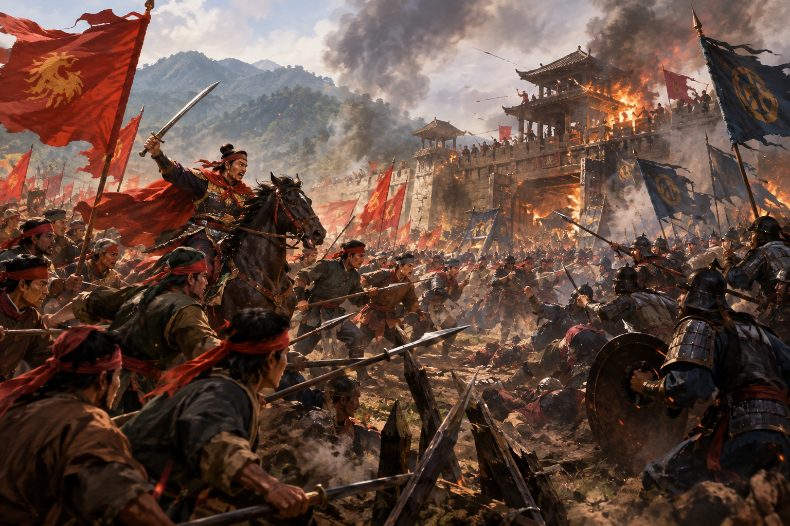
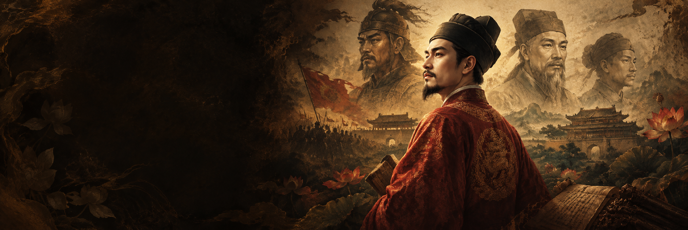
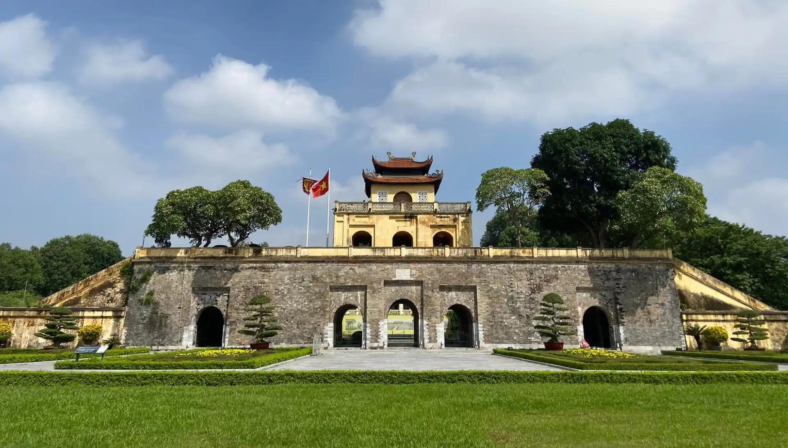
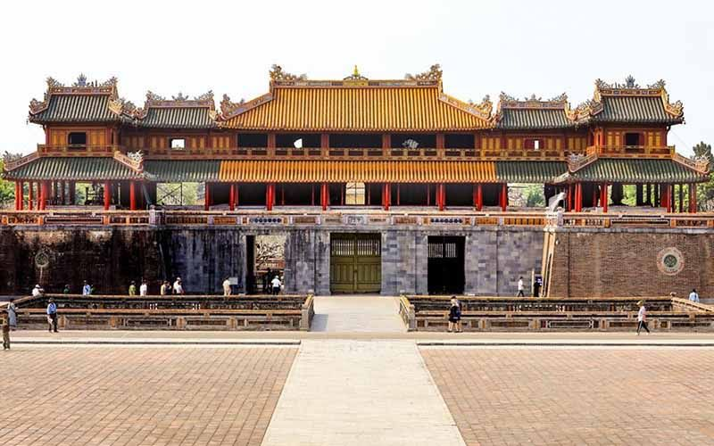
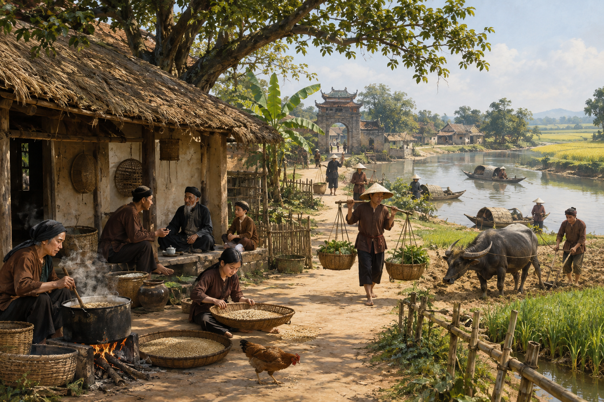
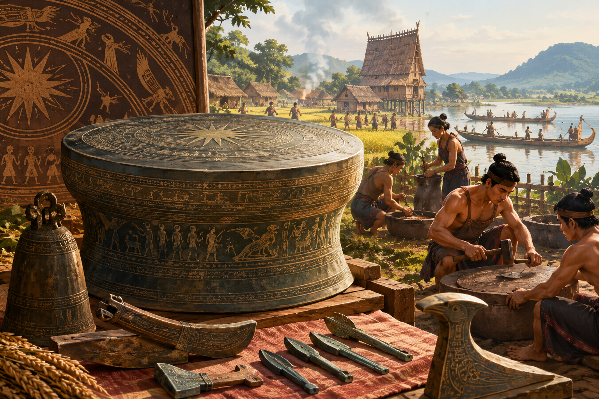
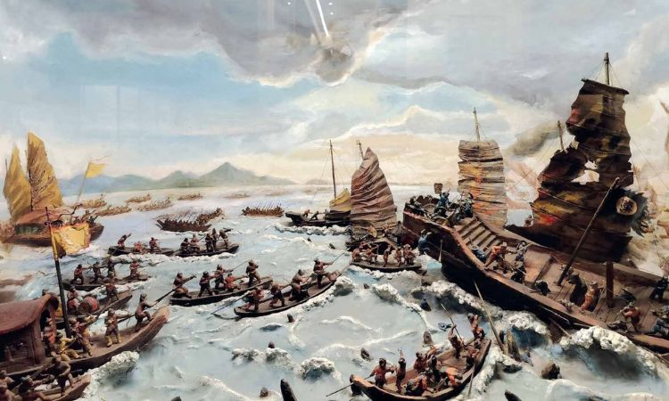
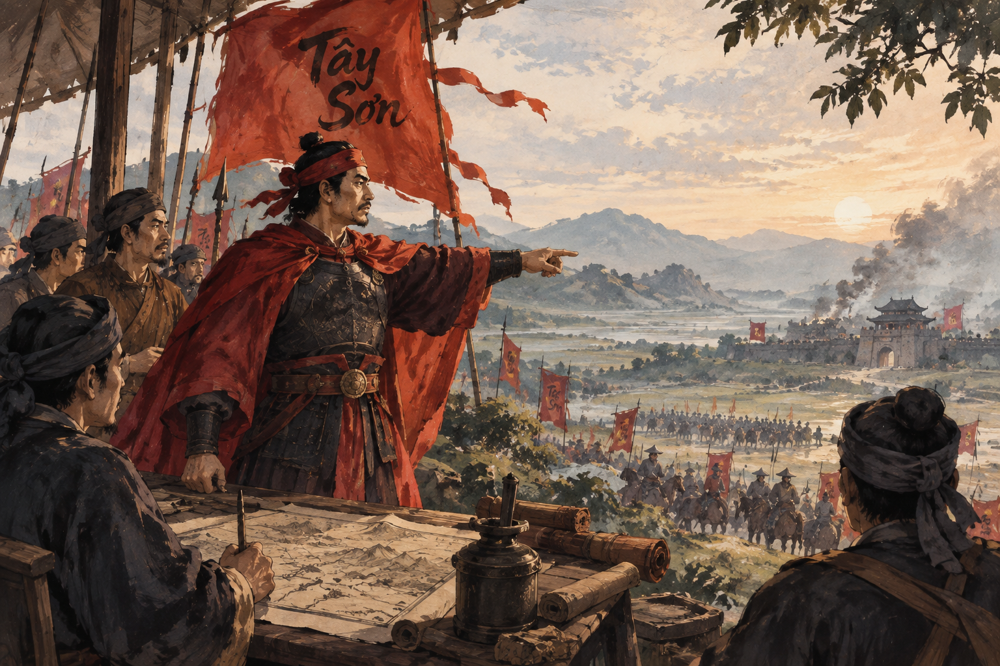
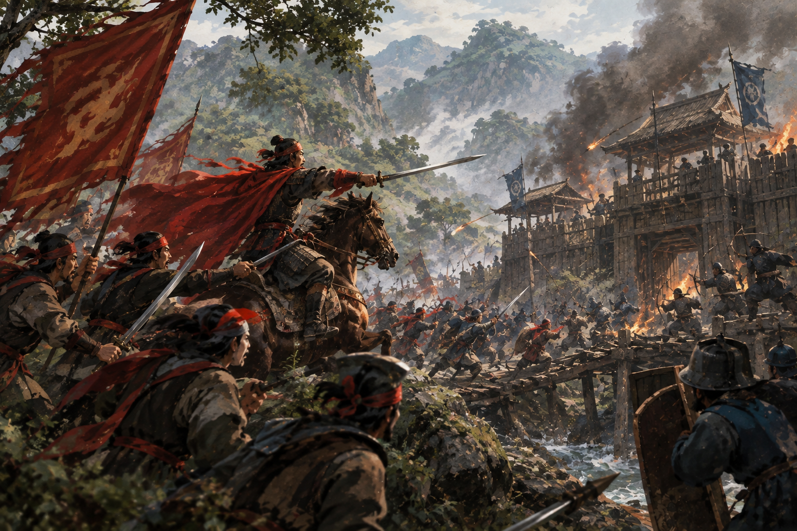

011418 — 1427
Khởi nghĩa Lam Sơn
Câu chuyện về Lê Lợi và cuộc khởi nghĩa Lam Sơn, một trong những dấu mốc quan trọng trong lịch sử đấu tranh giành độc lập của dân tộc Việt Nam.
Đọc câu chuyện →Lịch sử trong từng nét vẽ

VIỆT NAM QUA NGHỆ THUẬT
Khám phá hành trình ngàn năm văn hiến Việt Nam qua những kiệt tác nghệ thuật đặc sắc.
“Mỗi tác phẩm nghệ thuật
là một trang sử,
mỗi nét vẽ là một lời kể
về dân tộc.”
CÂU CHUYỆN LỊCH SỬ
Mỗi tác phẩm nghệ thuật không chỉ mang vẻ đẹp thẩm mỹ mà còn lưu giữ những câu chuyện về con người, văn hóa và lịch sử Việt Nam.

011418 — 1427
Câu chuyện về Lê Lợi và cuộc khởi nghĩa Lam Sơn, một trong những dấu mốc quan trọng trong lịch sử đấu tranh giành độc lập của dân tộc Việt Nam.
Đọc câu chuyện →
02Từ năm 1010
Hành trình của vùng đất nghìn năm văn hiến, nơi lưu giữ nhiều dấu tích kiến trúc, nghệ thuật và những câu chuyện của lịch sử Việt Nam.
Đọc câu chuyện →
03Thế kỷ XIX — XX
Nghệ thuật cung đình Huế phản ánh một thời kỳ đặc biệt của lịch sử Việt Nam qua kiến trúc, trang phục, âm nhạc và những hoa văn tinh tế.
Đọc câu chuyện →
04Thế kỷ XIX — XX
Những bức tranh về cuộc sống thường ngày giúp chúng ta hình dung rõ hơn về con người, phong tục và sinh hoạt của người Việt xưa.
Đọc câu chuyện →
05Khoảng thế kỷ VII TCN — II
Văn hóa Đông Sơn để lại nhiều dấu ấn đặc sắc qua trống đồng, đồ đồng và những hoa văn phản ánh đời sống của cư dân Việt cổ.
Đọc câu chuyện →
06Năm 938
Trận Bạch Đằng năm 938 dưới sự lãnh đạo của Ngô Quyền là một dấu mốc quan trọng, mở ra thời kỳ độc lập lâu dài của dân tộc.
Đọc câu chuyện →
071771 — 1802
Phong trào Tây Sơn tạo nên những biến chuyển lớn trong lịch sử cuối thế kỷ XVIII, gắn với những chiến công của Nguyễn Huệ.
Đọc câu chuyện →Thế kỷ XIX — XX
Cây đa, giếng nước, sân đình, lũy tre và những phiên chợ quê tạo nên một không gian văn hóa quen thuộc trong ký ức người Việt.
Đọc câu chuyện →
CÂU CHUYỆN NỔI BẬT
1418 — 1427
Đầu thế kỷ XV, đất nước đứng trước nhiều biến động. Từ vùng đất Lam Sơn, Lê Lợi cùng những người đồng chí đã tập hợp lực lượng và bắt đầu cuộc khởi nghĩa chống quân Minh.
Trải qua nhiều năm chiến đấu, nghĩa quân Lam Sơn từng bước giành được thắng lợi. Cuộc khởi nghĩa kết thúc bằng thắng lợi lớn, mở ra một thời kỳ mới trong lịch sử dân tộc và đưa Lê Lợi lên ngôi Hoàng đế.
Câu chuyện Lam Sơn không chỉ là câu chuyện về chiến tranh và chiến thắng. Đó còn là câu chuyện về lòng yêu nước, ý chí và khát vọng độc lập của con người Việt Nam.
Khám phá dòng thời gian →DẤU ẤN THỜI GIAN
Năm 1010, vua Lý Thái Tổ dời đô từ Hoa Lư ra Đại La và đặt tên kinh đô mới là Thăng Long. Từ đó, vùng đất này trở thành một trung tâm chính trị, văn hóa quan trọng của đất nước.
Qua nhiều thế kỷ, Thăng Long — Hà Nội đã chứng kiến biết bao biến đổi của lịch sử. Những công trình kiến trúc, tranh vẽ và hiện vật còn lại ngày nay giúp chúng ta nhìn thấy phần nào diện mạo của kinh đô xưa.
VĂN HÓA CUNG ĐÌNH
Cố đô Huế là nơi lưu giữ nhiều giá trị nghệ thuật đặc sắc của triều Nguyễn. Từ những cung điện, lăng tẩm đến các họa tiết trang trí, tất cả đều thể hiện sự tinh tế của nghệ thuật truyền thống.
Không gian cung đình cũng trở thành nguồn cảm hứng cho nhiều nghệ sĩ, giúp hình ảnh Huế được lưu giữ qua hội họa và nhiều loại hình nghệ thuật khác.
CON NGƯỜI VÀ ĐỜI SỐNG
Không phải câu chuyện lịch sử nào cũng bắt đầu từ những vị vua hay những trận chiến. Cuộc sống bình dị của người dân cũng là một phần quan trọng tạo nên lịch sử.
Những hình ảnh về người nông dân, phụ nữ, trẻ em, chợ quê hay những sinh hoạt đời thường giúp nghệ thuật trở thành một chiếc cầu nối giữa hiện tại và quá khứ.
DI SẢN VIỆT CỔ
Văn hóa Đông Sơn là một trong những nền văn hóa khảo cổ tiêu biểu của Việt Nam thời kỳ kim khí. Những hiện vật bằng đồng cho thấy trình độ kỹ thuật và đời sống tinh thần phong phú của cư dân Việt cổ.
Đặc biệt, trống đồng với những hình ảnh người, chim, thuyền và hoa văn hình học đã trở thành biểu tượng quen thuộc khi nhắc đến nghệ thuật và văn hóa Việt Nam thời cổ đại.
DẤU MỐC LỊCH SỬ
Năm 938, Ngô Quyền đã lựa chọn sông Bạch Đằng làm nơi quyết chiến với quân Nam Hán. Ông cho đóng những cọc gỗ lớn dưới lòng sông và lợi dụng thủy triều để tạo nên một thế trận đặc biệt.
Chiến thắng Bạch Đằng trở thành một trong những chiến công nổi bật của lịch sử Việt Nam, mở ra thời kỳ đất nước giành lại quyền tự chủ sau một thời gian dài chịu sự đô hộ.
THỜI KỲ BIẾN ĐỘNG
Phong trào Tây Sơn bắt đầu từ vùng đất Tây Sơn vào năm 1771 và nhanh chóng trở thành một phong trào lớn, tạo nên những thay đổi sâu sắc trong lịch sử Việt Nam cuối thế kỷ XVIII.
Hình ảnh Nguyễn Huệ và những chiến thắng của nghĩa quân Tây Sơn, đặc biệt là chiến thắng Ngọc Hồi — Đống Đa năm 1789, đã trở thành những câu chuyện lịch sử được lưu truyền qua nhiều thế hệ.
CON NGƯỜI VÀ QUÊ HƯƠNG
Làng quê truyền thống là không gian gắn bó với đời sống của nhiều thế hệ người Việt. Cây đa, bến nước, sân đình, lũy tre và những con đường làng tạo nên một diện mạo rất riêng của làng quê Việt Nam.
Những phiên chợ, lễ hội, sinh hoạt gia đình và công việc đồng áng cũng trở thành nguồn cảm hứng cho nhiều tác phẩm nghệ thuật, giúp hình ảnh làng quê được lưu giữ trong ký ức dân tộc.
DÒNG THỜI GIAN
Hình thành một nền văn hóa đặc sắc với kỹ thuật đúc đồng và nghệ thuật trang trí phong phú.
Ngô Quyền đánh bại quân Nam Hán, mở ra thời kỳ độc lập tự chủ.
Lý Thái Tổ dời đô từ Hoa Lư ra Đại La và đặt tên kinh đô là Thăng Long.
Quân dân nhà Trần đánh bại quân Nguyên — Mông trong trận Bạch Đằng.
Lê Lợi dựng cờ khởi nghĩa tại Lam Sơn, mở đầu cuộc chiến kéo dài nhiều năm.
Lê Lợi lên ngôi Hoàng đế, mở đầu triều Lê sơ sau thắng lợi Lam Sơn.
Phong trào Tây Sơn bắt đầu tại vùng đất Tây Sơn và tạo nên những biến chuyển lớn trong lịch sử.
Quân Tây Sơn dưới sự chỉ huy của Nguyễn Huệ giành chiến thắng lớn trước quân Thanh.
Huế trở thành kinh đô của triều Nguyễn, tạo nên một thời kỳ phát triển đặc biệt của nghệ thuật cung đình.
Hội họa Việt Nam bước vào giai đoạn phát triển mới với nhiều họa sĩ và tác phẩm có giá trị.
Nghệ thuật Việt Nam tiếp tục phát triển với nhiều hình thức sáng tạo mới nhưng vẫn giữ sự kết nối với văn hóa truyền thống.
LỊCH SỬ VÀ NGHỆ THUẬT
Hãy tiếp tục khám phá những tác phẩm, nhân vật và dấu mốc đã tạo nên diện mạo văn hóa Việt Nam.
Xem các tác phẩm →